나폴레옹 시대의 해전
게시: 2016-10-20T22:35:51+09:00
역사상 가장 유명한 함대라고 하면 16세기 말의 스페인 무적 함대 또는 20세기 초의 러시아 발틱 함대 정도를 들 수 있겠습니다만, 역시 스페인 무적 함대가 더 유명하겠지요. 결론적으로는 이 두 함대 모두 기대와는 달리 풍비박산이 났습니다만, 사실 당시에도 그 '기대'는 현실감이 없는 지배층의 기대였고, 실제 항해를 떠나는 두 함대 실무자들의 마음은 매우 무거웠다고 합니다. 자신들의 준비 상태가 엉망이라는 것을 잘 알고 있었으니까요.
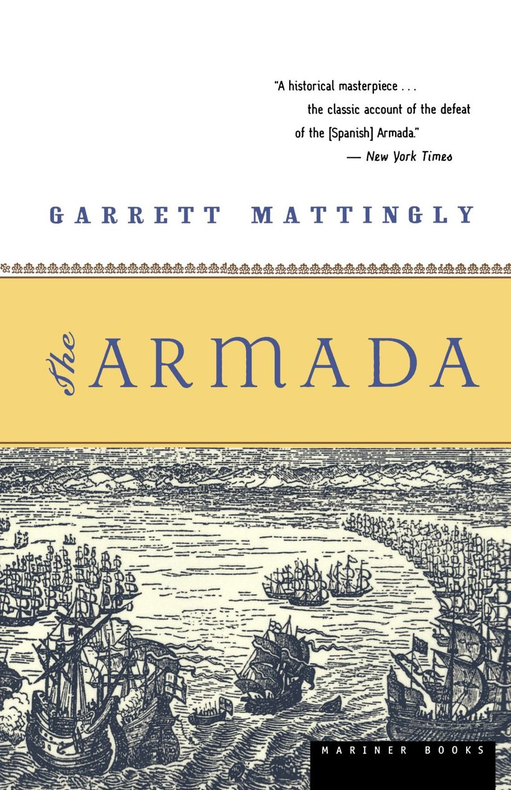
(개럿 매팅리의 '아르마다'입니다. 한글판도 있고, 저는 한글판으로 읽었습니다. 매우 재미있습니다. 퓰리처 상도 받은 명작입니다.)
아뭏든, 당시 개박살이 난 스페인 무적 함대의 경과를 그린 개럿 매팅리의 '아르마다'라는 책을 읽어보면, 스페인 함대가 진 이유가 결코 영국군의 대포 때문이 아니라는 것을 알 수 있습니다. 저는 그 책을 읽기 전에는, 단거리포만으로 무장하고 실제 전투의 결판은 전통적 방식인 칼과 피스톨로 끝내려는 스페인 함대에 대해, 영국 함대는 단병접전을 피하고 장거리포로 무장했기 때문에 영국이 이겼다고 알고 있었습니다. 그러나 영국군의 장거리포가 스페인 함대를 괴롭히기는 했지만 그 포격으로 침몰한 스페인 배는 없었습니다. 심각한 파손을 입은 배도 없었고요. 가장 큰 타격은 영국군의 화공선(fire ship)에서 비롯되었고, 더 큰 타격은 폭풍과 기아 때문이더군요. 당시 영국군 함대가 보유하고 있던 컬버린 포 등으로는, 아무리 명중을 시켜도 나무로 만든 군함을 격침시킬 수가 없었던 것입니다. 당시 영국 함대 지휘관 중의 하나였던 호킨스 경은 '조국을 침공하는 스페인 함대를 격파하지 못하고 졸졸 따라다니기만 하다가' 화약과 포탄이 다 떨어져서 전투조차 불가능해진 영국군 함대를 보고 "이것이 다 우리 탓이지 누굴 탓하겠는가"하면서 한탄할 정도였습니다. 결국, 영국 해군도 더 큰 구경의 대포를 매우 근접한 거리에서 쏴야 효과를 볼 수 있다는 사실을 깨닫습니다.
18세기말, 19세기초의 군함들은 분명히 아르마다 시절인 16세기 군함들에 비해 훨씬 더 날렵한 디자인과 육중한 화력을 갖추고 있었습니다만, 기본적인 무기 체계가 바뀐 것은 아니었습니다. 따라서 당시 해전에서도, 상호간의 포격의 결과로 침몰하는 군함은 그리 많지는 않았습니다.
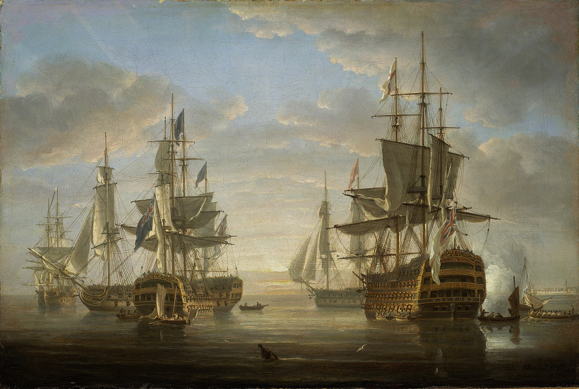
(넬슨 제독의 함대입니다. 당시 군함들은 매우 복잡한 밧줄 구조물로 엮어 놓은 아름다운 목공예품 같은 느낌이 듭니다.)
당시 영국 해군은 주로 파도가 아래 방향으로 물결칠때 발포했고, 프랑스나 스페인 해군은 파도가 윗 방향으로 물결칠때 발포하도록 훈련을 받았습니다.
영국 해군의 목적은, 적함의 본체를 타격하여 적의 포병들을 무력화시키고 갑판 위의 적병들을 쓸어버리려는 것이었습니다. 특히, 너무 낮게 조준을 하는 경우에도, (마치 돌로 물수제비 뜨는 것처럼) 포탄이 물 위를 퉁퉁 튀겨서 적함을 때리는 경우가 대부분이었으므로, 좀더 명중률을 높일 수 있었습니다.
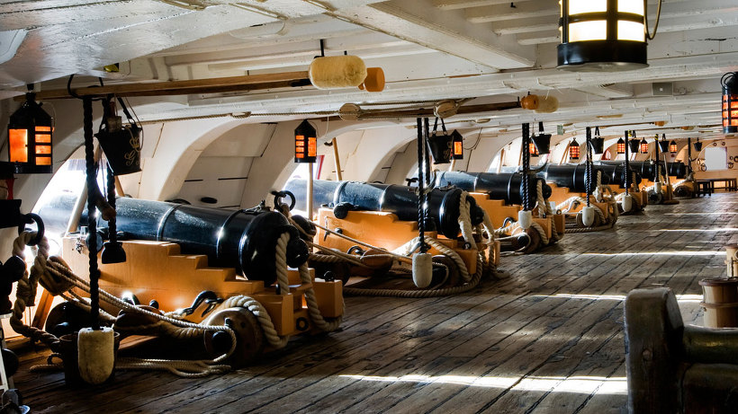
(넬슨 제독의 기함 빅토리 호의 포열 갑판의 모습입니다. 포병들이 가득찬 이 공간에 쇳덩어리 roundshot이 두꺼운 나무 벽을 뚫고 나무 파편들과 함께 날아들어오면 그야말로 끔찍한 피바다가 일어났습니다.)
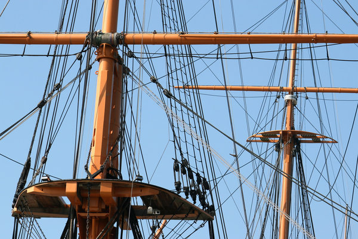
(저렇게 돛대에 수도 없이 묶여있는 밧줄들은 단순히 선원들이 기어오를 수 있도록 매어 놓은 것이 아닙니다. 돛대라는 물건은 배의 용골에 못을 박아 고정한 물건이 아니라, 저 밧줄들에 의해 지탱되는 물건입니다. 따라서 대개의 경우 전투 중 돛대가 쓰러지는 것은 대포알에 돛대가 부러지는 경우보다는, 저 밧줄들이 끊겼기 때문인 경우가 많았습니다.)
반면, 프랑스나 스페인 해군은, 주로 막대기 탄이나 쇠사슬탄 (그림참조)을 발사하여, 적의 마스트나 가로돛대, 돛 등을 망가뜨리는 것에 목표를 두었습니다. 그러려면 당연히 좀 높게 쏘아야 했지요. 사실 이런 방식도 나름대로의 잇점이 있었습니다. 당시의 배는 본체보다도 돛대가 훨씬 면적이 컸기 때문에, 이 부분을 노리고 쏘는 것이 더 나을 수도 있었습니다. 조준이 다소 낮게 된 경우에도, 갑판 위의 적병들을 쓸어버릴 수도 있었고, 또 돛대나 가로돛대에 명중했다면, 거기에서 떨어지는 나무파편이나 도르레 뭉치에 갑판 위의 적병들을 다치게 할 수 있었습니다. 일단 적의 돛대를 망가뜨리고 나면, 적함은 거의 움직일 수도 없고 방향을 바꿀 수도 없었으므로, 적함의 이물이나 고물 방향으로 접근하여 이쪽편의 broadside (옆면의 포문을 통해 퍼붓는 일제 사격)로 적함을 긁어버릴 수 있었기 때문이었습니다. 실제로 영어식 표현도 rake(긁는다)라고 합니다. 이 rake가 무서운 것은, 당시 군함들의 구조상, 주포는 모두 옆면을 향하고 있고 고물이나 이물에는 변변한 포가 없었으므로, 이쪽은 지근거리에서 적에게 포탄을 마음껏 퍼부울 수 있는데 반해, 상대편은 반격을 할 수 없기 때문입니다.
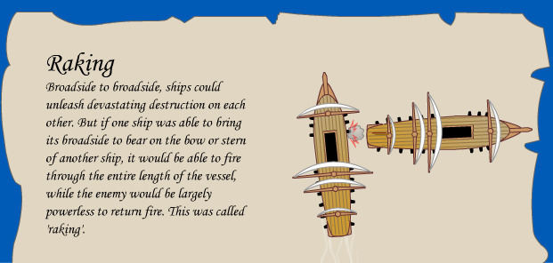
(Raking fire, 즉 종사입니다. 일제 포격 한방으로 많은 적병을 쓸어 버릴 수 있었으므로 갈퀴로 긁는다는 뜻의 rake라는 단어가 쓰였습니다.)
이 이야기가 나왔으니 말인데, 당시 전투에 의한 사상자는 (요즘도 그렇지만) 대부분 대포알에 직접 맞은 직격탄보다는 대부분 파편에 의한 것이었습니다. 당시 대포는 폭발탄을 쏘는 것이 아니고 속이 쇠로 꽉 찬 roundshot을 쏘았기 때문에, 파편이 있을 수가 없었습니다. 당시 병사들의 목숨을 노렸던 파편은 모두 나무 파편이었습니다. 대포알에 맞아 부서지는 돛대나 두꺼운 목판은 날카로운 파편을 수없이 튀게 만들었고, 여기에 맞으면 큰 부상을 당했습니다. 특히 머리 위로 떨어지는 돛대나 가로대 등도 큰 위협이었습니다. 따라서, 당시 전투 준비가 시작되면, 꼭 행해지는 작업 중의 하나가, 갑판 위의 병사들 머리 위에 큰 그물을 치는 것이었습니다. 머리 위로 떨어지는 파편들을 막자는 것이었지요.
물론 당시에도 폭발탄은 있었습니다만, 특히 해군에서는 거의 사용되지 않았습니다. 이유는 간단했습니다. 당시 폭발탄은 모두 곡사포로 발사했는데, 움직이는 군함을 출렁이는 파도 위에서 곡사포를 발사하여 명중시키는 것은 당시 기술로서는 거의 불가능한 일이었기 때문이었습니다. 사실 이는 당시 배 위에서 백병전을 벌이는 임무를 띄고 있던 해병들에게도 적용되는 것이었습니다. 해병들의 소총은 육군이 사용하는 것보다 오히려 약간 조잡하게 만들어져 있었는데, 이유는 그렇게 하는 것이 고장이 훨씬 적게 났기 때문이었습니다. 특히, 육군에서는 종종 사용되는 라이플 소총은 사용할 일이 전혀 없었습니다. 위아래로 요동치는 배 위에서 적함을 향해서 조준 사격을 한다는 것은 의미가 없는 일이었기 때문이었습니다. 특히, 일부 해병들은 돛대 위의 망루에 올라가서 거기서 적함을 내려다보며 사격을 했는데, 그렇게 높은 망루는 파도의 움직임에 따른 흔들림이 더욱 심했습니다. 그래서 차라리 회전 포(swivel gun)라고 하는, 꼭 오늘날의 탱크 해치에 장착하는 50구경 기관총처럼 생긴 작은 대포를 망루에 장착해두고 거기서 포도탄을 내리쏘는 경우도 많았습니다.
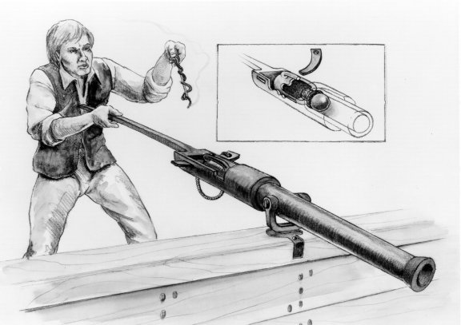
(이 그림이 swivel gun입니다.)
다만, 넬슨 제독은 그렇게 망루에서 총을 쏠 경우, 발사할 때 튀어나오는 wadding(화약 마개)으로 인해 돛에 불이 붙을 수 있다는 이유로 망루에서 총을 쏘는 것은 금지했다고 합니다. 하지만 그런 이유로 발생한 화재가 보고된 바는 없고, 결국 넬슨 자신은 프랑스군이 아마도 망루에서 쏜 듯한 총탄에 맞아 최후를 맞게 됩니다.
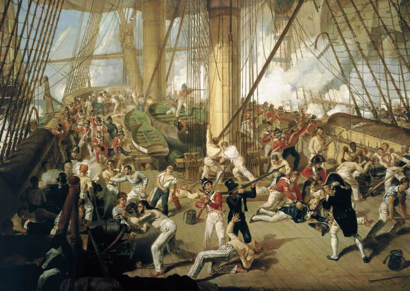
(넬슨 피격 장면입니다. 실제 상황은 그림보다 훨씬 더 안 좋아서, 서 있는 수병보다는 쓰러진 수병들이 훨씬 더 많았고, 거의 패배 직전의 상황이었습니다.)
당시 전투가 벌어지면 가장 위험한 장소는 어디였을까요 ? 바로 갑판 위였습니다. 특히 함장과 고급 장교들, 그리고 조타수가 있는 quarterdeck, 즉 후갑판이 제일 위험했습니다. 앞서 말한 회전포도 그 quarterdeck을 노렸습니다. 전투가 벌어지면 해병 한명이 하갑판으로 통하는 햇치를 지키고 서있게 되는데, 이유는 겁을 집어먹은 수병들이 갑판 아래로 도망치는 것을 막기 위한 것이었습니다. 가장 안전한 곳은 어디였을까요 ? Orlop deck이라고 부르는, 즉 가장 배 밑에 있는 수면 아래에 위치한 갑판이었습니다. 당시 포탄 특성상, 수면 아래 깊숙한 부분은 절대 뚫지 못했기 때문이었습니다. 즉, 포탄은 수면을 튕겨나가 물수제비를 뜨게 되거나, 또는 물 속으로 들어온다고 하더라도 두꺼운 목재를 뚫기에는 힘이 너무 약해졌습니다. 부상병을 치료(...라기보다는 팔다리를 자르는 것이 보통이었던)하기 위한 군위관은 전투가 벌어지면 여기에 자리를 잡고 수술을 진행했습니다. 당시 군함에는 군인들 뿐만 아니라, 해외로 파견나가는 정부 관료나 그 가족같은 민간인이 타고 있는 경우도 많았습니다. 이런 민간인들은, 전투가 벌어져도 사실 목숨 걱정을 하는 일은 전혀 없었습니다. 모두 orlop deck이나, forepeak 같은 수면 아래 깊숙한 공간으로 내려갔거든요. 다만 전투가 벌어지는 동안은 그런 구석진 공간에 우글거리는 바퀴벌레 및 쥐떼들과 친하게 지내야 했겠지요.
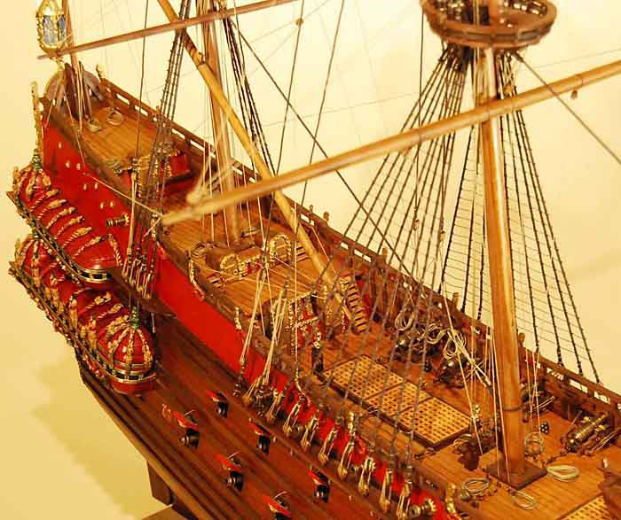
(뒤쪽의 다소 높은 갑판이 quarterdeck. 살기를 바라는 자는 전투 중 이 곳을 피하는 것이 좋았습니다. 맨 뒤쪽의 가장 높고 작은 갑판은 poop deck이라고 불렸습니다.)
요즘 군함이야 레이더 성능이 곧 그 군함의 성능과 맞먹을 정도로, 먼저 적을 탐지하는 것이 중요했고, 또 그에 맞서 스텔스 기능에 대한 연구도 활발합니다. 나폴레옹 시대에는 레이더도 없고, 또 레이더가 있어라도 어차피 장거리 미사일이 없었으므로 별 쓸 모가 없어 보입니다. 그러니, 당시 군함끼리 전투에서 보이지 않는 군함으로부터 급작스럽게 기습을 당하는 경우는 거의 없었을 것입니다. 하지만 '눈에 보이지 않는' 군함이라는 것이, 반드시 투명 군함을 뜻하지는 않습니다. 아군 또는 중립국 군함인 줄 알았다거나, 또는 민간 상선인 줄 알았다가 지근거리에 와서야 적함인 것을 깨닫는다면 그것도 낭패입니다. 당시에는 그러한 점을 이용한 전술이 아주 흔하게 활용되었습니다. 즉, 깃발을 자국기가 아닌, 엉뚱한 국가의 깃발을 내다는 것이지요.
이게 불법 아니냐고요 ? 대개는 아니었습니다. 최소한, 첫번째 발포를 시작하기 전에 진짜 자국기를 내걸기만 하면, 그건 정당한 위장 전술(ruse de guerre)로 인정받았습니다. 보통 해적 영화보면 해적선이 마지막 순간에야 해골이 그려진 해적기를 올리는 것을 볼 수 있는데, 그게 다 적법한 (어차피 해적인데 적법 불법을 따지나 ?) 전술이었던 것입니다.
그러니까 당시 군함들은, 단독 항해시에 미확인 선박을 만나면, 어떤 깃발을 올리고 접근을 할까 고민을 하다가 일단 가짜든 진짜든 깃발을 올리고 접근을 합니다. 가령 저쪽이 프랑스 깃발과 펜던트를 날리고 있다면, 일단 이쪽도 프랑스 깃발과 페넌트를 올리고 접근했다고 치지요. 이쪽도 프랑스 군함이라고 선언을 했다면, 그 다음 차례는 저쪽이 'private signal', 즉 비밀 신호를 보냅니다. 물론 깃발 신호로요. 이건 현대 전투기에서의 IFF (If Friendly or Foe, 피아식별) 장치 같은 것이지요. 이 깃발 신호에는 제대로 대응을 할 수 없으므로, 우물쭈물하면서 최대한 접근하다가 결국 영국 깃발을 내걸고 '꽈광' 발포를 하는 것이지요.
예나 지금이나, 정확한 정보는 전투에서건 상거래에서건, 엄청난 가치를 지닙니다. 일단 군사 행동에서는 공격만 있는 것이 아닙니다. 우리 군함이 중요한 연락 문서를 가지고 홀로 인도양을 항해 중인 프랑스 프리깃 함이라면, 저렇게 발견된 미확인 선박이 영국군의 74문짜리 전열함일 가능성이 많습니다. 그렇다면 적이 우리를 발견하기 전에 당장 침로를 변경하여 수평선 아래로 사라지는 것이 장땡이겠지요. 또, 상황이 반대라서 이쪽이 공격을 하려는 입장이라고 해도, 가능한한 미리 전투 준비를 해두고 있는 것이 유리합니다.
여기서 전투 준비라 함은, 'clear for action'을 말합니다. Clear for action 이라고 하는 것은, 나름대로 시간이 꽤 오래 걸리는 작업입니다.
1. 먼저 갑판 아래에 있는 선실들을 구분하는 나무 벽들을 모두 떼어내서, 간판 아래를 넓은 하나의 공간으로 변형시킵니다. 이래야 대포 사격 및 통제를 제대로 할 수 있기 때문입니다. 이때 일반 장교들은 물론 함장의 가구나 서류, 소지품같은 것들은 모두 하갑판 창고로 쳐박히게 됩니다.
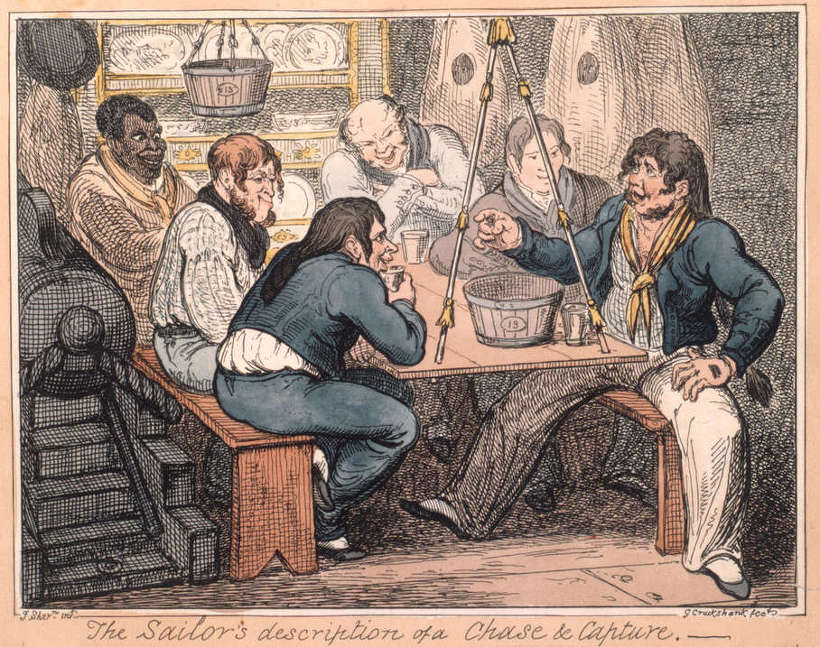
(선원들을 위한 별도의 선실이 따로 있는 것이 아닙니다. 저렇게 선원들이 식사하는 저 공간은 바로 포열 갑판이었고, 그림 왼쪽에 보이는 것처럼 대포 사이사이의 공간의 접이식 식탁에서 먹고 마셨습니다. 전투 시에는 저런 잡다한 기물들은 모두 떼어내 선창으로 내려보냈습니다.)
2. 수병들의 침구인 해먹 말아둔 것을 꺼내어 난간 등에 고정시켜 둡니다. 진지 구축시의 모래주머니 쌓아둔 것과 같은 방탄 효과를 냅니다. 또, 포격에 맞아 떨어질 삭구나 가로활대 등으로부터 갑판 위의 수병들을 보호하기 위한 방어 그물막을 펼쳐 고정합니다.
3. 주방(galley)의 불을 끕니다. 재수없게 적의 포탄이 주방 아궁이를 때릴 경우 화재가 발생하기 때문입니다. 물론, 아직 시간이 있다면 clear for action에 들어가기 전에, 마지막 식사를 준비하기 위해 염장 쇠고기를 삶아두는 것이 좋겠지요. 치열한 포격전 중에도 수병들이 원기를 찾을 수 있도록 약간의 음식과 물을 준비해두는 것이 보통이었다고 합니다. 물론 대개는 찬 음식이었지요.
4. 탄약고에서 적절한 숫자의 포탄과 화약을 날라오고, 포격에 필요한 슬로우 맷치 (slow match, 천천히 타는 도화선) 및 포구를 식히는데 쓸 물통 등을 준비합니다. 또 포구를 막아두었던 마개도 뽑고, 핸드 스파이크 등 대포를 운용하는데 필요한 이런저런 도구들을 가져다 둡니다. 또 화재가 날 때에 대비하여 소방용 물통도 채워둡니다. 시간이 충분하면, 대개 벌겋게 녹이 슬어있을 포탄의 표면을 정으로 쪼아서 녹을 벗겨냅니다. 그래야 명중률이 좋아지거든요.
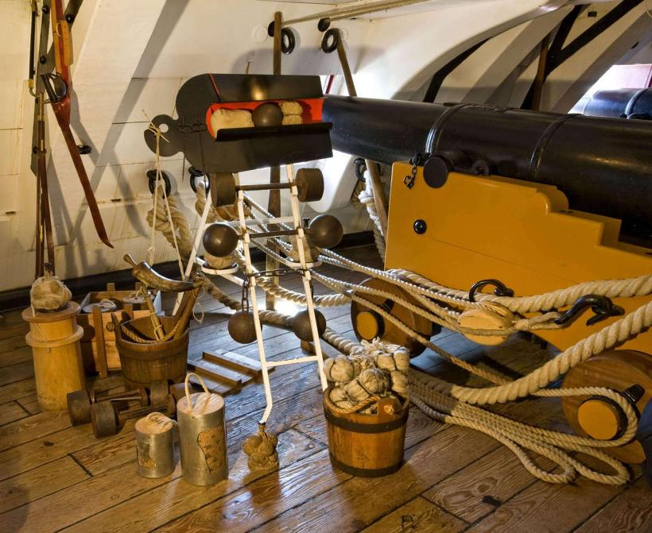
(이건 텍사스 오스틴의 군사 박물관에 전시된 18세기 후반 ~ 19세기 초반 함포의 모습입니다. 저런 나무 물통 하나하나가 포격에 꼭 필요한 주요 장비였습니다. 물론 실제로는 저렇게 깔끔하진 않았겠지요.)
5. 이런저런 준비가 다 되면, 각자 지정된 전투 위치로 가서 사격 명령이 떨어지기를 기다립니다. 군의관은 선창 바닥 근처의 응급실(cockpit)에 칼과 톱, 붕대 등을 갖다놓고 기다립니다.
이런 준비들은 대개 상대 군함이 사정거리 내로 접근하기 전에 다 마칠 수 있습니다. 한 30분 걸릴까요 ? 어쨌거나 조금이라도 먼저 전투 태세에 들어가는 것이 더 유리할 것이고, 특히 깜깜한 야밤 중이라서, 적함의 접근을 전혀 눈치채지 못한 상태라면, 그야말로 앉아서 눈뜨고 당하는 수 밖에 없습니다.
결국 당시의 전투 양상은 대략 아래와 같았습니다.
1. 양쪽 함대가 서서히 접근합니다.
이때, 적함대와 안싸우는 것이 낫겠다고 생각되면 도망을 쳐야 하는데, 이럴 경우 바람을 등지고 있는 함대가 훨씬 유리합니다. 도망을 칠지, 교전을 할지 마음대로 택할 수 있었기 때문이었습니다.
2. 양쪽이 서로 다른 진영으로 격돌하여 뒤엉킵니다.
학익진 같은 것은 사용되지 않았던 것이 확실합니다만, 이때의 함대 진영은 상황에 따라 제각각이었습니다. 가령, 넬슨 제독이 트라팔가에서 썼던 전법은 이열 종대로 길게 늘어선 함대가 적 함대를 수직으로 돌파하는 것이었습니다. 적함대를 양분하려고 했던 것이지요. 이렇게 이열 종대로 쳐들어가면, 적함대를 돌파할 때까지는 적의 broadside 공격을 받으며 고전을 면치 못하지만, 일단 적함의 이물과 고물 사이에 뛰어들면 저항할 수 없는 적함을 '긁어'줄 수 있었으므로 그다지 나쁜 전술은 아니었습니다. 사실 먼거리에서 쏘아대는 broadside는 그리 명중률이나 파괴력이 대단치 않았으므로 더욱 그랬습니다.
하지만, 사실 트라팔가에서도, 모든 군함들이 이렇게 질서정연하게 쳐들어간 것이 아니고, 각 함선의 사정에 따라 제각각 전투에 돌입했다고 합니다. 일단 전투가 시작되면, 함대의 제독이 할 수 있는 것은 거의 아무것도 없었고, 그저 각 함의 함장들이 제대로 해주기를 기도할 뿐이었습니다.
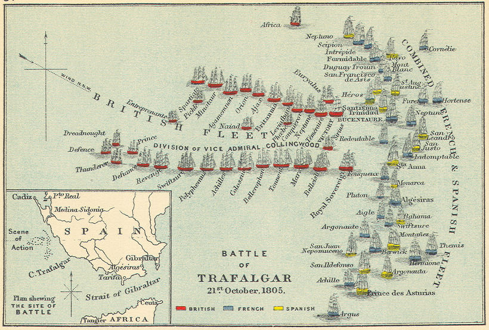
(트라팔가 전투에서 프랑스-스페인 연합 함대의 횡대에 돌진하는 영국 함대입니다. 2열 종대로 이렇게 들어가는 경우는 매우 드물었습니다.)
3. 상호간에 무자비한 근접 포격을 주고 받습니다.
좀 먼 거리에서는 roundshot이나 chainshot 등을 쏘아대다가, 정말 바로 옆으로 다가오게 되면 grapeshot을 쏘았습니다. 이건 일종의 산탄 같은 것으로, 적함의 갑판 위의 전투원들을 피떡으로 만들어놓았습니다. 또 갑판 아래의 대포에서는 계속해서 roundshot을 퍼부어서, 적함의 대포를 무력화시키려고 노력했습니다.
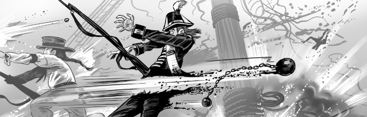
(사슬탄의 제대로 된 용도입니다... 끔찍하지요 ?)
4. 해전의 영원한 로망 - boarding
글자 그대로 총칼로 무장한채 적함에 뛰어드는 것입니다. 미리 적함에 뛰어들 전투원들을 선발해 두는 것이 보통이었습니다. 이들을 boarding party라고 불렀습니다. 당연히 붉은 코트를 입은 해병들이 선두에 섰고, 원거리 전투에서는 포수 노릇을 하던 선원들도 권총이나 칼(cutlass)로 무장시켜 전투원으로 썼습니다. 보통의 전투는 이렇게 백병전으로 끝나는 것이 보통이었습니다.
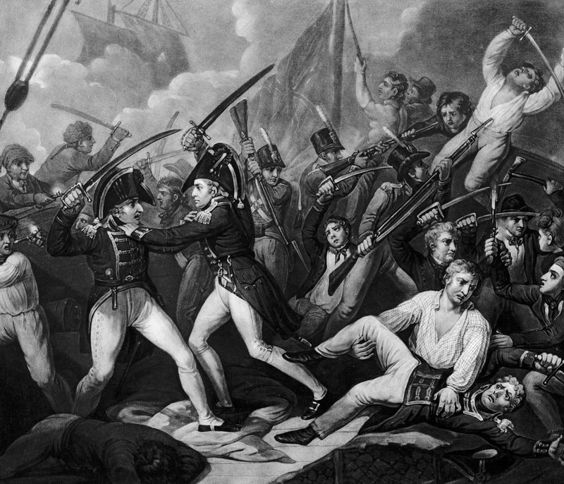
(함상에서의 백병전입니다. 아무 옷이나 대충 입고 싸우는 수병들 중 마치 육군처럼 머스켓 소총을 들고 군모까지 쓴 병사들은 해병, 즉 marine입니다. 원래 해병대의 기원은 저렇게 함상에서의 백병전 담당 전문병이었습니다. 해병들은 저렇게 멋은 있을지 몰라도 거추장스러운 군복을 입어야 했던 대신, 이런저런 뱃일에서는 면제되었습니다.)
5. 항복
가끔씩은, 백병전 없이 포격전만으로도 항복하는 경우가 있었습니다. 어느 한쪽의 피해가 너무 커서, 더 이상의 저항이 무의미하다고 생각되면 당시의 함장들은 주저하지 않고 항복을 했습니다. '침몰하는 군함의 함장은 배와 운명을 같이 한다'는 것은 이 시대에는 없던 말이었습니다. 일단 나무로 만든 군함은 아무리 구멍이 뚫려도 잘 침몰하지 않았습니다. 또, 정당한 상태에서, 즉 선원들의 사상자가 너무 많은 경우 항복하는 것은 전혀 불명예스러운 일이 아니었습니다.
그러면 대체로 사상자가 얼마나 되면 항복하는 것이 보통이었을까요 ? 여기에는 좋은 예가 있었습니다.
영국 해군의 프리깃함 레안더 (HMS Leander) 호는 넬슨 제독의 지휘하에 나일강 전투에도 참전하는 등 맹활약을 하다가, 넬슨의 명령에 따라 지브롤터로 되돌아 가던 중이었습니다. 크레타 섬 부근을 지나갈 때 자신보다 더 큰, 프랑스의 대형 전함 제네로(Le Généreux) 호를 맞닥뜨리게 되어, 전투를 벌입니다. 레안더 호의 톰슨 함장은, 총 300명의 선원 중 92명이 죽거나 다치게 되자, 항복합니다. 그러다가 나중에 포로 교환으로 풀려나서 본국에 돌아오자, 항복의 이유에 대해 형식상의 군법 재판을 거친 뒤에, 명예로운 항복이었다는 판결을 받고 무죄 방면 되었을 뿐만 아니라, 불리한 상황에서도 영웅적인 전투를 벌였다고 해서 국민적인 영웅으로 추앙됩니다. C.S. Forester의 연작 소설 혼블로워 7편 'Flying Colors'는 바로 이 역사적 사실에 근거를 둔 것입니다.
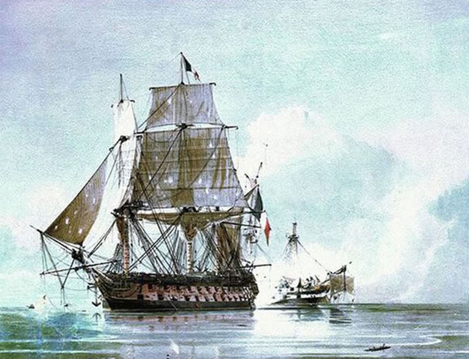
(레안더 호과 제네로 호의 전투 모습입니다. 전면이 제네로이고, 저 뒤쪽에 박살이 난 전함이 레안더입니다.)
항복한 장교들은 적군으로부터도 거의 예외없이 모두 상당히 명예로운 대접을 받았습니다. 승리한 함장은 항복한 적 함장을 당연히 식사에 초대해서 대접해야만 했습니다. 또 항복한 적함에 민간인, 특히 부녀자가 타고 있을 경우 이들은 각별한 보호를 받았고, 또 최대한 빠른 시간 안에 본국으로 되돌려보내졌습니다. 항복한 장교들조차도, 가석방 문서에 서명만 하면 적함 내부나 적국 시내를 마음대로 돌아다닐 수 있었고 (물론 돈이 있을 경우에는) 상당히 호화로운 생활도 누릴 수 있었습니다. 또 많은 경우 포로 교환 조치에 따라 본국으로 귀국할 수도 있었습니다. 심지어는 포로 교환에 '가불'도 있었습니다. 즉, 가령 프랑스가 영국군 포로를 많이 잡아두고 있는데, 영국군 측에서는 대신 풀어줄 프랑스군 포로가 없다면, 양쪽 다 난감했습니다. 포로들이야 당연히 난감했을 것이고, 영국측도 자기 장교들을 못 돌려받으니 난감했겠지만, 프랑스측은 왜 난감했을까요 ? 포로들은 하는 일 없이 계속 먹고 마시는데다가, 장교 포로들의 경우는 가끔씩 식사에 초대를 하는 등 상당히 예의를 차려주어야 했습니다. 정말 귀찮기 짝이 없는 존재들이었거든요. 그래서 '나중에 적절한 포로 교환이 이루어질 때까지는 절대 프랑스와의 전쟁에 복무하지 않겠다' 라는 선서를 받고는 그냥 풀어주는 경우도 많았습니다. 이것이 바로 포로 '가불'입니다.
출처 : 아르마다 - 개럿 매팅리
Patrick O'Brian's Navy - The illustrated Companion to Jack Aubrey's World - editor Richard O'Neill
British Napoleonic Ship-of-the-Line - Angus Konstam
http://www.icollector.com/Naval-chain-shot-12-pounder-early-1800s-rare_i17425677
http://www.keyword-suggestions.com/Y2hhaW4gc2hvdA/
http://www.bbc.co.uk/history/interactive/animations/trafalgar/index_embed.shtm